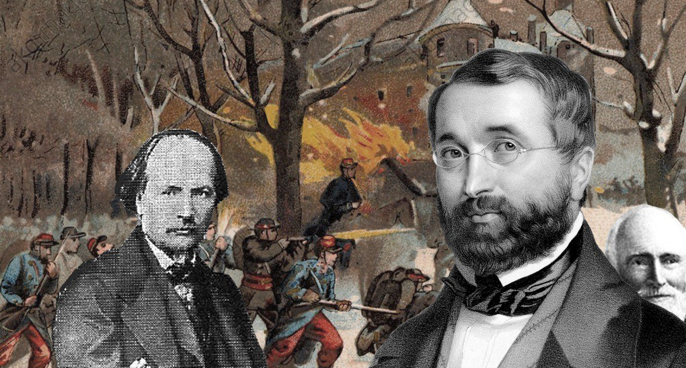
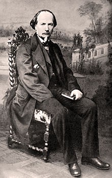

1665 O Holy Night 啊！聖善夜
|
|
|
| 1 O holy night! the stars are
brightly shining;
It is the night of the dear Savior’s birth.
Long lay the world in sin and error pining,
Till He appeared and the soul felt its worth.
A thrill of hope- the weary world rejoices,
For yonder breaks a new and glorious morn!
Fall on your knees! O hear the angel voices!
O night divine, O night when Christ was born!
O night, O holy night, O night divine!
2 Led by the light of faith serenely beaming,
With glowing hearts by His cradle we stand.
So led by light of a star sweetly gleaming,
Here came the Wise Men from Orient land.
The King of kings lay thus in lowly manger,
In all our trials born to be our Friend.
He knows our need— to our weakness is no stranger.
Behold your King, before Him lowly bend!
Behold your King, before Him lowly bend!
3 Truly He taught us to love one another;
His law is love and His gospel is peace.
Chains shall He break, for the slave is our brother,
And in His name all oppression shall cease.
Sweet hymns of joy in grateful chorus raise we;
Let all within us praise His holy name.
Christ is the Lord! O praise His name forever!
His pow’r and glory evermore proclaim!
His pow’r and glory evermore proclaim!
Source: One Lord, One Faith, One Baptism: an African American ecumenical
hymnal #267
|
啊！聖善夜，眾星宿閃耀光芒，親愛救主誕生伯利恆，
世界不斷地步向沉淪失喪，救主顯現眾生靈復得尊嚴。
這困倦人生充滿欣悅希望，因清澈晨曦彰顯大榮光。
屈膝敬拜，靜聽天使唱歌聲，
聖哉此夜，救主基督降生，聖哉此夜，救主基督降生。
信心之光在空中引導輝煌，歡悅心靈在聖嬰馬槽旁，
高掛在天那星光燦爛晶瑩，東方博士把禮物獻呈。
萬世君王躺臥在卑微馬槽，作我眾朋友，負我眾罪咎。
祂賜所需，領我們遠離危難，
尊祂為王，拜伏在祂面前，尊祂為王，拜伏在祂面前。
副歌：
祂是救主，當永遠稱頌祂名，
永遠傳揚祂的權能和榮耀，
永遠傳揚祂的權能和榮耀。
|
|

http://sooopu.com/html/301/301044.html


https://hymnary.org/hymn/CEL1997/285 |
| |
|
https://zh.wikipedia.org/wiki/%E5%9C%A3%E5%96%84%E5%A4%9C
聖善夜[編輯]
維基百科，自由的百科全書
跳至導覽跳至搜尋
《聖善夜》（英語：O Holy Night，法語：Cantique
de Noël）是一首著名的聖誕頌歌，該歌曲是阿道夫·亞當在1847年為法國詩歌《聖誕午夜》（Minuit,
Chrétiens）譜曲而成。原詩歌的作者是一位釀酒師普拉西德·卡波（1808-1877），亦是一名詩人。
1843年法國加爾省的羅屈埃莫爾教堂管風琴翻修完成，為了慶祝這一事件，教區牧師請住在當地的普拉西德·卡波撰寫聖誕詩歌。普拉西德·卡波是一個反對教權的無神論者，但他仍創作了這首詩歌。[1]之後阿道夫·亞當為該詩作曲，並在1847年首次演出。
http://www.cap.org.tw/W/w-156-6.html
聖誕頌歌傳奇
◆陳茂生
「喔！聖善夜」
1906年的聖誕夜，美國一位33歲的匹茲堡大學化學教授Riginal Fessenden（他是當時發明家愛迪生的主力化學家），運用新發明的發電機，通過麥克風宣講了聖經路加福音第二章有關耶穌基督降生的故事。那是人類科學史上的重大記事，是人聲第一次通過電波廣播傳達出去的偉大發明。Fessenden教授的聲音不但震驚了許多遠在大西洋中航行船隻上的無線電操作員，更使不少新聞從業員幾乎從他們的辦公椅上跌翻！當人聲經由小小的擴音器宣揚了耶穌誕生的故事之後，Fessenden教授更以小提琴演奏出當時已相當受美國人歡迎的“O
Holy
Night”（中文譯為「喔！聖善夜」）的聖誕頌歌，人們還以為是天使從天而降，以天籟之音傳揚著耶穌誕生的大喜信息。Fessenden教授萬萬沒料到他那聖誕夜的幾分鐘廣播，不但轟動了全世界，千千萬萬人聚精會神地守在他們小小的無線電器旁，沉醉在「聖誕神蹟」之中；而這首於1847年聖誕夜首度被使用於巴黎近郊小教堂的「聖誕頌歌」（原法文標題為“Cantique
de
Noel”），一夜之間成為全世界最受歡迎的聖誕歌曲之一！1970年代之後，更因為世界三大男高音之一帕華洛蒂以及美國名女高音潔西諾曼的主唱唱片，使這首聖誕歌曲始終高居於金牌唱片聖誕歌曲的排行榜之上。
無名神父與業餘詩人
1847年12月初，法國巴黎郊外小鎮Roquemaure的一位神父，可能為了鼓勵他的一個不勤於上教堂的會友Placide Cappeau（b.
1808-1877），邀請他寫一首聖誕詩。Cappeau先生當時是小鎮的酒政委員，並以業餘寫詩為樂。當他被邀寫詩時，自然是受寵若驚。一個不常上教堂的人，竟被神父看重，要他寫聖誕詩。他當時認為這是非常榮幸的任務，也就謙卑地接受了重任。萬萬沒想到他的這首「聖誕頌歌」卻留芳萬世，而人們根本不知那位神父的大名。
Cappeau先生在一個12月天，搭乘馬車前往巴黎，在那灰塵滿佈及顛簸不堪的路途中，他不斷地思考著神父交託他的任務。腦海中想像著自己在伯利恆的馬槽前見證耶穌誕生的神聖情景，思考著路加福音第二章有關耶穌基督降世為人的福音，心中充滿了祝福，靈感源源而生，在他抵達巴黎時，“Cantique
de Noel”的詩文已然成形。
他自己重複朗讀這首聖誕頌歌，感動之餘，確認它應該能成為一首眾信徒喜愛吟唱的聖誕歌曲。但是，好詩一定要有絕配的音樂，於是Cappeau先生就請教比他年長五歲，當年已是名滿巴黎的歌劇作曲家Adolphe
Charles Adam（1803-1856）。Adam原是猶太後裔，從未慶祝「聖誕節」，也鮮少涉獵宗教音樂。但是Cappeau先生那充滿宗教情操的詩詞，卻深深感動了他，他彷彿親臨耶穌降生的伯利恆城，那基督誕生的神聖之夜，確是為了拯救世上罪人的關鍵之夜。Adam先生認真而誠心地思考耶穌降世的深義，於是優美雋永的音樂就順著他的筆尖自然地譜成了這首「聖誕頌歌」。幾週後的聖誕夜，Roquemaure小教堂的聖誕夜彌撒中，當獨唱者及詩班唱出了這首新創作、意義深刻的詩詞所譜出的音樂時，信眾感動之餘，更心誠意敬地融入與詩班共同吟唱這首「聖誕頌歌」的喜樂之中。隔年，法國各地幾乎沒有一間教堂不在聖誕夜的子夜彌撒中吟唱這首「喔！聖善夜」。

禁絕不了的「聖誕頌歌」
這首一夜成名的「聖誕頌歌」，唱遍了法國的各個教會，然而不到三年之間，卻遭到被教會「禁唱」的命運。原來，業餘詩人Cappeau先生因同情「社運」而遭指責，而教會領袖們更以作曲家Adam是猶太後裔，因此將此作品冠上了「缺乏音樂格調，毫無宗教精神可言」，以它「不適合使用於崇拜」為理由，於1851年將它全面封殺。然而，禁歸禁，封殺歸封殺，這首「頌歌」已是當時法國家喻戶曉的聖誕頌歌。1857年，一位美國作家將它介紹給美國的基督徒，這首頌歌繞了半個地球，竟在美國掀起了另一個熱潮。
患了「講道恐懼症」的牧師
John Sullivan
Dwight（1813-1893）原是美國哈佛大學神學院的畢業生，他被麻省北罕頓的教會禮聘為牧師後，卻患上了「講道恐懼症」。常常在主日崇拜開始時，會眾找不到牧師。原來，他竟把自己「鎖」在牧師館中，不敢出去講道。
上帝並沒有放棄他，一年之後，Dwight牧師在不知經過了多少掙扎及禱告之後，確信上帝賦與他音樂及詩詞編輯的恩賜，於是辭去了教會的牧師之職，自己創辦了一家「音樂雜誌社」，他自己當總編輯至少30年之久，並創辦了「哈佛音樂協會」。他的寫作及編輯，激發了許多北美作曲家的創作靈感，當這首「喔！聖善夜」繞了半個地球來到他手中後，他審慎地研究它，吟唱那法文譜出的優美音樂，發現歌詞不但明確講到了耶穌降生的莊嚴及重要性，更深深地體會出第三節中的「適況性」。
「祂教導我們相愛； 祂的律法就是愛，祂的福音是和平。 祂將為奴隸打斷鎖鏈，因為他們是我 們的弟兄。 在祂名下，一切壓迫終將止息，
我們將吟唱著感恩喜樂的詩歌， 讓我們全心讚美祂的聖名。」
Dwight牧師原本就非常反對美國南方的奴隸制度，這首詩歌更堅定了他深信「耶穌降世就是要使所有人類得自由」的心志，於是原詩的靈感激發他譯出了這首至今仍被認為是最佳英文譯詩的精采「聖誕頌歌」。他將這首歌刊載於自己出版的雜誌，以及當時許多不同的詩歌本之中。不久就成為美國人最喜愛的聖誕詩歌之一，尤其是南北戰爭期間（1861-1865），更是受到北美洲人群的喜愛！
戰爭與和平
“Cantique de
Noel”，遭到法國天主教會全面禁唱的20年之後，德法戰爭激烈進行，1871年的聖誕夜，兩軍對峙之下，最前線的一位法國士兵，突然從戰場上跳了出來，雙方戰士被這「瘋狂」的舉動嚇壞了，大家屏息注視著這位手無寸鐵的士兵，只見他面無懼色地站在毫無掩避的戰場中央，突然間，嘹亮的歌聲響遍了戰場，那竟是法國人最愛的「喔！聖善夜」。戰場上立時萬籟寂靜，只聽他唱著“Minuit,
Chretien, Cest L' heare solennelle Qu L'Homme Dieu descendit jusqu'a nous”(在那聖善之夜，上帝為我們降臨世間)。在他唱完全曲之後，全場一片肅穆的寂靜，突然，從德軍的戰壕中也跳出了一位士兵，以德文唱出了馬丁路德所寫的聖誕詩歌“Vom
Himel hoch, da komm ich
her”（我自高天而降）。雙方戰士隨即「傾壕」而出，大家在聖誕歌聲中享受了「短暫」的平安夜。此後，法國的天主教會，再也無法禁唱這首聖誕頌歌了！
上帝真奇妙
有時，我們會覺得上帝很幽默，很會作弄人，但是，基督徒深信祂是一位全能奇妙的神。一首傳揚祂自己「救恩」的聖誕頌歌，竟然是透過一位已經無人記得名字的小鎮教堂神父，以及不勤於上教堂的業餘詩人會友，經由一位被天主教會視為仇敵的猶太後裔作曲家譜出的音樂，更由一位從牧師職位打「退堂之鼓」的音樂雜誌編輯，譯出了最傑出的英文詩詞，而使得幾乎全世界的基督徒都能吟唱這首動人的「喔！聖善夜」！祂是真正奇妙的神，祂的偉大作為，差遣了聖靈感動了世上不同才情的人，寫出了感人而雋永的聖誕歌曲，使我們情不自禁地要謙卑屈膝於聖嬰基督耶穌的面前，敬拜祂，尊崇祂！◆（作者為前台灣神學院教會音樂系教授暨主任；現任美國中華基督教音樂崇拜學院教授、路城聖樂團創辦人暨指揮。）
1. Ace Collins, “Stroies Behind The Best——Loved Songs of Christmas”,
Zondervan, Michigan, 2001
2. The Worshiping Church——A Hymnal, Worship Leaders' Edition, Hope Publishing
Comp. 1991. editor: Donald P.Hustad.
3. Richard J. Stanislaw & Donald P. Hustad, °sCompanion to the Worshiping
Church°X°X A Hymnal” Hope, 1993
4.《世紀頌讚》，浸信會出版社，香港，2001年，總編輯：凌忍揚
https://michelleoboe.pixnet.net/blog/post/33078166-%E9%9F%B3%E6%A8%82%EF%BD%9Co-holy-night-%E5%96%94%EF%BC%81%E8%81%96%E5%96%84%E5%A4%9C
「O Holy Night 喔！聖善夜」歌曲，作詞者為一位年長的法國小鎮鎮長Placide
Clappeau，
寫於1847年。後由巴黎的作曲家Adolphe Adam譜上曲調，後傳至北美洲由John
Dwight翻譯為英文而廣泛流傳。
這首詩歌曲風優美，記得第一次聽到此首歌曲是在全國小學的合唱團比賽中，當我聽到副歌的聖潔與敬崇的合唱時感動異常。
另外，這首歌曲也有許多著名的歌手、聲樂家詮釋，
例如Celin Deon、Mariah Carey、Pavarotti、Sarah
Brightman....
通常演出於具有歷史的大教堂搭配大型的管弦樂隊演出，
詮釋 「
神愛世人，甚至將他的獨生子賜給他們，叫一切信他的，不致滅亡，反得永生。因為神差他的兒子降世，不是要定世人的罪，乃是要叫世人因他得救。( 約3:16-17)
」的意義，體會耶穌誕生為世人帶來的喜悅。
https://chinese.gospelherald.com/articles/29404/20201222/%E8%81%96%E5%96%84%E5%A4%9C-%E8%AE%9A%E7%BE%8E%E6%95%91%E4%B8%BB%E5%82%B3%E5%A5%BD%E4%BF%A1%E6%81%AF-%E8%81%96%E8%AA%95%E6%AD%8C%E5%85%83%E7%B4%A0%E7%BC%BA%E4%B8%80%E4%B8%8D%E5%8F%AF.htm
聖誕節萬眾歡騰，演奏頌唱聖誕歌成為慶祝節日之一，究竟聖誕歌、讚美詩、福音歌曲，三者有什麼區別？
歌頌愛情營造節日氣氛 非聖誕歌原意
攻讀音樂的横坂剛比古在日本基督教媒體Christian
Press專欄發文，分析聖誕歌與讚美詩的區別。他指，聖誕歌曲的類型很多，美國歌手瑪麗亞·凱莉（Mariah Carey）的《All I Want For
Christmas Is you》、山下達郎主唱日語版的《聖誕夜》也是聖誕歌。高銷售量的有1942年平·克勞斯貝（Bing
Crosby）演唱的《白色聖誕》（White Christmas）被譽為「最佳聖誕節歌曲」，唱片全世界銷售超過5000萬張，列入健力士世界紀錄。
不過，該些歌曲都不是「讚美詩」。横坂剛比古解釋，讚美詩是在教堂演奏的所謂「教堂音樂」的一部分，是指那些歌詞特別用以讚美上帝，並且是歌頌耶穌基督降生而寫成的讚美詩。
即使是慶祝聖誕節的歌曲也不能稱為讚美詩。瑪麗亞·凱莉和山下達郎的歌曲是情歌，而不是對上帝的讚美，因此不能稱為讚美詩；平·克勞斯貝的《白色聖誕》也不是讚美詩，它只表達聖誕節的場景，不是讚美上帝。許多在聖誕節經常演唱，帶有聖誕老人主題的歌曲，只是聖誕節歌曲而不是讚美詩。
横坂剛比古列舉屬於讚美詩的聖誕歌，計有：1862年的《天使歌唱在高天》（Angels We Have Heard on
High），歌詞改寫自路加福音2章8至15節，述說天使在平原歌唱，榮耀歸於至高之處，牧羊人來到伯利恆跪拜基督新生王的誕生等。
另有《聖善夜》（O Holy Night），於1847年法國詩歌《聖誕午夜》（Minuit, Chrétiens）譜曲而成，詩歌作者為一名詩人。歌詞描述在救主誕生在伯利恆的情景，在「聖善夜，歡悅心靈在聖嬰馬槽旁，高掛在天那星光燦爛晶瑩，東方博士把禮物獻呈，祂是救主，當永遠稱頌祂名」。
「神聖之歌」讚美上帝傳達福音
此外，横坂剛比古認為讚美詩具有承載「福音」的信息，形成「福音音樂」，即是「以音樂唱出福音」。横坂剛比古將「福音音樂」嚴格規定為「歌詞必需讚美上帝」。他指，今天的所謂福音音樂只是一種純音樂，許多福音歌曲的歌詞與基督教無關，或是一些宗教性的術語，而且被歸類為福音，但歌詞不是讚美上帝也不是福音。
横坂剛比古總結，教會詠唱的詩歌應選用「神聖之歌」，讚美上帝、傳達福音，盼望教會堅持這個聖樂傳統。
https://sites.google.com/site/granvillechinese/praise-the-lord
https://youtu.be/cZ-8jYpa1-o
https://youtu.be/V7uiqRCW6I8
除了好听之外，歌词也很有深意。比如第一段中“世人沉沦 全地已罪恶贯盈，直到主来 灵魂自觉宝珍，”
这让我想起1982年第四军医大学的学生张华为了救一位掉进粪坑的老农而死，从而引起了“是否值得”的争论，直到今年还有人把他和“范跑跑”相比，讨论是否应该为了救别人而牺牲自己。这些讨论中似乎都有“被救的人的价值”的因素在内。
我们每个人都可以扪心自问一下：我值得谁为我而死？可是，这个世界的创造主，竟然为了我这个沉沦了的罪人而死！“唯有基督在我们还作罪人的时候为我们死，神对我们的爱就在此显明了。”
（罗马书5:8）神爱我、耶稣替我、为我而死，正是这个举动才让我认识到自己的价值何在，也让我明白我应该为谁而活；也正因如此，后面的一句歌词“Fall
on your knees! 跪拜主前！”(直接翻译应该是：“跪下吧！”或“让我们屈膝！”) 才是理所当然的呼召！
第二段歌词开始讲的是东方的博士被那颗奇妙的星所引导，来到耶稣的“床”前，随后“祂是我良友当受试心伤；主施恩赐，看顾我软弱需要”引用了希伯来书第四章的最后两句：“因为我们的大祭司并不是不能同情我们的软弱，他像我们一样，也曾在各方面受过试探，只是他没有犯罪。所以，我们只管坦然无惧地来到施恩的宝座前，为的是要领受怜悯，得到恩惠，作为及时的帮助。”
所以，“仰望我王，谦恭俯拜祂前！”
也应是我们自然的回应。
比较而言，我觉得John Berry
不像是在演唱，而是在敬拜，而这正是我们唱这首歌曲时应有的心态：敬拜！屈膝敬拜！谦恭俯拜！
第三段歌词中的“主碎锁链，”这锁链不光是指罪性对每个人的奴役，也包括最终所有人对人的压迫都将被终止，人因着爱而带来和平。以赛亚书58:6写道：“要松开凶恶的锁链，解开轭上的绳索，使被压迫的获得自由，折断所有的轭。”
这正是神的主权在地上全面得到彰显时的情形。那时，“众人当齐声赞扬主圣名； 基督是主！啊，永远颂祂圣名！”
Josh
Groban
的歌声朴实无华、缓慢抒情，“Fall on
you knees!”
和
“Christ is the Lord!”
两句坚实有力、令人动容。电影“The Nativity Story”
（《圣诞节的故事》）中片断中出现了Mary的父母、撒迦利亚和伊丽莎白抱着婴儿施洗约翰观看远方的星、穷苦的牧羊人来看耶稣、远方的博士骑的骆驼屈膝下跪等镜头，实在是对这首歌很好的诠释。
Josh Groban演唱第1、3段歌词
https://youtu.be/4Zh-yR0pbmU
当然，这首歌也被翻译成中文演唱，并配上电影的片段。我个人觉得美中不足的是原来的那种庄严、神圣的情绪被轻快、优美所取代...
哦！圣善夜！
https://youtu.be/U5r6RjTKcq8
愿这首圣诞颂歌成为大家默想圣诞节的意义并向主耶稣发出敬拜和赞美的心曲！
https://petersanfilippo.medium.com/o-holy-night-an-atheist-an-american-christian-a-missing-hand-and-war-26875bdc83b2

Dec 15, 2017·4 min read
Adolphe Adam — 1847 All Christmas music can be plotted along a spectrum. On
the one end, we have “religious reverence and Christian service to God”, and
“winter-related nonsense” on the other. If “Baby It’s Cold Outside” and “Jingle
Bells” sit on the “Winter-Related Nonsense” end, “O Holy Night” pretty much sits
exactly opposite it. This carol has been a staple in churches and holiday films
for decades, and its notoriety is well deserved. The song is epic, like the Lord
of the Rings in carol form, with huge, swelling chords climbing to peaceful
resolve. It’s glorious, yet serene, with just a little darkness mixed in.
“O Holy Night” is the product of circumstance in southern France. In the
medieval town of Requemaure in 1843, the parish priest of the local church
wanted to commemorate the renovations to the church organ. This led him to poet
and wine merchant Placide Cappeau, a man with little to no interest in religion.
Cappeau accepted the request, and on a stagecoach en route to Paris, penned the
poem “Minuit, chrétiens,” or “Midnight, christians.” Totally unrelated to the
poem, but Cappeau had one hand, having lost his right hand as a child when his
friend accidentally shot him. Impress your friends and family next time “O Holy
Night” drops.

Count ’em. One…yup, one hand. The priest suggested Cappeau bring his poem to
Composer Adolphe Adam. Adam was actually a friend of Cappeau (not the one that
shot him), and used the poem as the basis for a composition. Adam was a prolific
composer, writing music for several operas and ballets including Giselle, and
can be placed on the lengthy list of Jewish composers who’ve written Christmas
music. The resulting carol was simply titled “Cantique de Noël” or “Christmas
Carol,” and premiered in 1847, performed by local opera singer Emily Laurey.
.jpeg)
Adolphe, looking reeeeaal smug. The carol was instantly popular, but took a
sharp nosedive once word got out about Cappeau. Cappeau was an atheist with
strong disdain for religious authority. Outraged, the church leadership banned
the song from the French liturgy. The French people wouldn’t let the song go,
and for a time it lived on outside the church. Eventually, this tune reached the
ears of John Sullivan Dwight, an American Unitarian Minister, influential music
critic, and part-time Santa impersonator.
I have no definitive proof Dwight isn’t Santa. In 1855, Dwight decided to
translate it to English, and the resulting translation is what we now know as “O
Holy Night.” Due to his more religious philosophies, Dwight decided to take a
few liberties with Cappeau’s lyrics, and “O Holy Night” is much less subdued by
comparison. Dwight changed Cappeau’s refrain “People, kneel down, await your
deliverance. Christmas, Christmas, here is the Redeemer” to “O night divine, the
night when Christ was born.” Dwight was a Transcendentalist, essentially a
reactionary movement to Intellectualism that states there is an inherent
goodness to everything and everyone. “O Holy Night” presents the night and the
event itself as being holy, an element absent from the original. This version
became popular, overshadowing the original, and with a few tweaks here and there
over the last hundred and sixty-odd years, we have the modern version. There is
one more little oddity with this story. Legend has it that “Cantique de Noël”
played a part in the Franco-Prussian War. During a lull in battle on December
24th, 1870, French troops started singing the carol from their trench, and it
moved the German soldiers so much, they began to sing one of Martin Luther’s
hymns. The impromptu battle of the bands resulted in a 24-hour truce so the
soldiers on both sides could celebrate Christmas. There isn’t much proof that
this actually happened, but it may have lead to the growth in popularity of the
tune across France at the time and its eventual reinstatement into French
churches. So that’s “O Holy Night,” a song written by a Jewish man, based on a
poem by a French atheist, rejected by the church, translated by an American
Transcendentalist, maybe sung on battlefields with German troops, and most
certainly sung every year by more and more singers who don’t give a damn about
any of this.
https://youtu.be/N-zYi82AiFk
https://www.americamagazine.org/arts-culture/2020/11/19/brief-history-o-holy-night-christmas-hymn-review

1940s choir boys (ClassicStock/Alamy)
1940s choir boys (ClassicStock/Alamy)
Twenty-six years ago, George W. Hunt, S.J., then editor in chief of America,
wrote that “O Holy Night” was one of his favorites among Yuletide songs,
modestly adding: “I’ve sung it countless times in choir (the dull second tenor
part).”
Our fond memories of “O Holy Night” are closely associated with the familiar
English words translated from the original French by the Unitarian minister John
Sullivan Dwight. Former director of the school at the 19th-century Brook Farm
commune in Massachusetts, Dwight witnessed the conversion to Catholicism of a
number of his fellow commune members, including Isaac Hecker—later a Roman
Catholic priest and founder of the Paulist Fathers, the first religious
community of priests created in North America.
“It might be a good thing to discard this piece whose popularity is becoming
unhealthy,” one early critic wrote.
Tweet this
Whether this religious aura influenced Dwight’s 1855 translation is debatable.
Undocumented legends have persistently surrounded “O Holy Night,” including that
trench-fighting during the Franco-Prussian War of 1870 (or alternately, World
War I) temporarily ceased while French troops sang the song to their opponents
on Christmas Eve.
A better documented, if generally overlooked, instance of the nurturing power of
“O Holy Night” was reported in The Marine Corps Times in December 2004. In
Fallujah, Iraq, to convey a message of love from home, the Rev. Ron Camarda, a
Catholic priest and Marine Reserve major, sang “O Holy Night” at the bedside of
a dying American Marine, wounded on a military mission.
Dwight’s healing, pious and inspiring words tell us, as Father Hunt reflected,
about the light brought by the birth of Jesus. By 1885, Dwight’s lyrics had
become so accepted that Hart Pease Danks, a choir leader and songwriter best
remembered for the tear-jerking ballad “Silver Threads Among the Gold,” produced
his own adaptation of them in a version entitled “O Night Divine.” In all
fairness, the result could not be called an improvement.
The hymn’s healing, pious and inspiring words tell us about the light brought by
the birth of Jesus.
Tweet this
Yet the competing adaptations by John Sullivan Dwight and Danks shared the
quality of being unilaterally upbeat, much unlike the original French song,
“Minuit, Chrétiens” (“Midnight, Christians”), sometimes called “Cantique de
Noël.”
“Minuit, Chrétiens” began as a French poem by Placide Cappeau, a wine merchant
and leftist from Roquemaure, a small town in the Gard department of southern
France. Educated by Jesuit instructors at the Collège Royal in Avignon, Cappeau
penned the complex text in 1843 on the occasion of the restoration of stained
glass at the local church in Roquemaure.
His poem begins didactically, as if lecturing a crowd: “Midnight, Christians, is
the solemn hour when the Human God descended to us, to erase original sin and
cease the wrath of his Father.” Cappeau addresses the “powerful” of his day,
“proud with [their] grandeur,” ordering them to humble themselves before God.
Nothing of this discourse survives in the dulcet verses of the “O Holy Night” we
sing today.
Having ordered listeners to kneel, “Minuit, Chrétiens” then instructs them to
rise, in a way similar to the later left-wing anthem “L’Internationale.”
Tweet this
Having ordered listeners to kneel, “Minuit, Chrétiens” then instructs them to
rise, in a way similar to the later left-wing anthem “L’Internationale” (1871),
which begins, “Arise ye damned of the earth.” Telling oppressed people to rise
up is common in anthems, but “L'Internationale,” written by Eugène Pottier, may
have partially reflected Placide Cappeau’s poem from a generation earlier.
Adolphe Adam, a composer of secular operas, set “Minuit, Chrétiens” to music in
1843 or 1847, according to two differing contemporary accounts. But many
elements in “Minuit, Chrétiens” did not sit well with church authorities. Soon
after it was written, the 1848 Revolution broke out in France, and Adam worried
some observers by calling “O Holy Night” a “religious Marseillaise,” referring
to the 1792 song adopted as the Gallic national anthem.
Official publications on Catholic music began to fret about the popularity of
“Minuit, Chrétiens,” calling its lyricist a socialist drunk. An unfounded rumor
also circulated that Adolphe Adam was Jewish, a falsehood that is repeated to
this day in some English-language writings. In 1930, Vincent d’Indy, a noted
Catholic royalist composer, wrote a text praising Richard Wagner and accusing
“Jewish composers,” erroneously including Adam’s name on the list, of being
interested only in financial gain.
As early as 1864, the Revue de Musique Sacrée, a distinguished journal focusing
on Catholic liturgical music, opined:
Adolphe Adam’s [“Minuit, Chrétiens”] has been performed at many churches during
Midnight Masses….it might be a good thing to discard this piece whose popularity
is becoming unhealthy. It is sung in the streets, social gatherings, and at bars
with live entertainment. It becomes debased and degenerated. The best would be
to let it go its own way, far from houses of religion, which can do very well
without it.
Further church criticism of the song itself focused on its militant tone and
dubious theology. Some priests inquired what the lyric “Et de son Père arrêter
le courroux” (“to cease the wrath of his Father”) referred to. Did “Minuit,
Chrétiens” describe a vengeful Old Testament-style deity in contrast to Jesus?
Perhaps because of these controversies, “Minuit, Chrétiens” was rarely included
in Catholic hymnals.
French Catholic criticism continued after the Second World War, when the
liturgical composer and musicologist Auguste Sérieyx chided choirs and organists
who “make our churches resound with such hare-brained inspirations” as “Minuit,
Chrétiens,” also chastising priests who “tolerate or encourage them.”
French Catholic criticism continued after the Second World War, when one
composer chided choirs who “make our churches resound with such hare-brained
inspirations.”
Tweet this
Le Dictionnaire du Foyer Catholique (published in Paris in 1956) declared that
the song “has been expunged from many dioceses due to the emphatic aspect of its
lyrics as much as the music itself, and the contrast they provide with the
holiday liturgy, so lovely and grand in its simplicity.”
Yet despite these and other objections decrying the music of “Minuit, Chrétiens”
as facile and banal, its international renown continued to grow.
Ecclesiastical concern about the popularity and content of “Minuit, Chrétiens”
was reproduced when it was imported to Canada in 1858 by Ernest Gagnon, a
folklorist, composer and organist. Gagnon had attended a Midnight Mass the
previous year at the Church of Saint-Roch in Paris, where a treble voice sang
“Minuit, Chrétiens.” After Gagnon popularized the song in Canada, a tradition
arose that parishes would select a soloist for the Midnight Mass performance of
“Minuit, Chrétiens” from among local noteworthies as a special honor.
RELATED STORIES
A handwritten score for ‘Silent Night,’ autographed by the song's author, the
Rev. Joseph Mohr (photo: Salzburg Museum).
‘Silent Night’ turns 200 this year. Is it the greatest Christmas song ever?
Edward W. Schmidt, S.J.
The song, originally written by Adam to be performed by a retired provincial
soprano who had premiered one of his less successful operas in Paris, would
likewise first be performed in Canada by a soprano singer. Only later did the
song become the province of tenors and baritones. But Adam, as a composer of
virtuoso operas, included some exposed high notes that challenge even
professional singers, let alone well-meaning amateurs. As a result,
congregations in Canada would customarily wait with trepidation for the
climactic phrases of the song to see whether notes would be sung sharp or flat.
There is no sign that Adolphe Adam expected he would be remembered principally
for “Minuit, Chrétiens,” alongside the ballet “Giselle.” His 1857 memoirs do not
even mention it. Yet for generations of “O Holy Night” listeners on Christmas
Eve and beyond, he remains indelibly the composer of that one immortal and
inspiring song.
Further listening
The original song, “Minuit, Chrétiens,” in French:
Performed by Georges Thill
Performed by Raoul Jobin
“O Holy Night” in English:
Canterbury Cathedral Choir
King’s College Choir
Birgit Nilsson
Celine Dion
In Swedish translation:
Jussi Björling